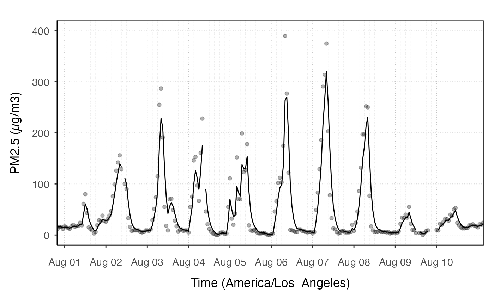

This function calculates the NowCast version of the data, and adds it to a plot. The default is to add a NowCast line.
stat_nowcast( mapping = NULL, data = NULL, version = "pm", includeShortTerm = FALSE, geom = "path", aqiColors = FALSE, mv4Colors = FALSE, position = "identity", na.rm = FALSE, show.legend = NA, inherit.aes = TRUE, ... )
| mapping | Set of aesthetic mappings created by |
|---|---|
| data | The data to be displayed in this layer. There are three options:
if |
| version | character identity specifying the type of nowcast algorithm to be used. For details see monitor_nowcast. |
| includeShortTerm | calculate preliminary NowCast values starting with the 2nd hour. |
| geom | The geometic object to display the data |
| aqiColors | if |
| mv4Colors | if |
| position | Position adjustment, either as a string, or the result of a call to a position adjustment function. |
| na.rm | remove NA values from data |
| show.legend | logical indicating whether this layer should be included in legends. |
| inherit.aes | if |
| ... | additional arguments passed on to |
ggplot_pm25Timeseries(PWFSLSmoke::Carmel_Valley, startdate = 20160801, enddate = 20160810) + geom_pm25Points() + stat_nowcast()#> Warning: Removed 1276 rows containing missing values (geom_pm25points).#> Warning: Removed 1265 row(s) containing missing values (geom_path).